Honey
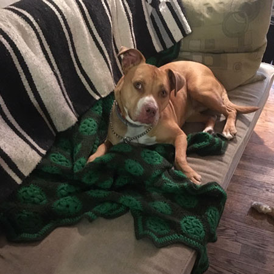
At nearly 7 years old Honey has a long history. She was rescued moments before she was to die in the city shelter. I was going to foster another dog (Mindy) who had someone taking them on Monday and this was Thurs. But on Friday I was urged to take Honey instead so they wouldn’t put her down. There was no way out for this kid. My single job has been to keep her alive and I’m doing very well (because I’m lucky) but she likes a life of adventure. Four years ago she took off on the ranch land for four days and I thought that was the end. It wasn’t. Last fall I was walking her late (too late, actually) at the golf course in Marfa and she took off after a rabbit and out there (on the ranch land again) she had a run in with a javalina. When she got back to me which was fairly soon she was covered in blood, had a couple of deep wounds inflicted probably when she was running away from them.
Every now and then she dumbly attacks another dog in the street, nice dogs usually being walked and conversely she has been attacked by other dogs in a similar situation. She usually gets her ass kicked on either side of the equation but if she’s such a lousy fighter why does she bother at all I ask.
What she always likes is her big friends. You’ll see her life with horses below. She trembles (with pleasure) at the sight of these guys and she feels the same about bulls and all variety of cows. Here’s a couple of calves I believe she fell for in a big way out of the ranchland this spring.
She loves other dogs too – Gunner is her big passion, a handsome footloose German Shepherd who lives in the neighborhood and also her and Buddy are friends. Buddy is Zoe’s dog, and Honey hung out a bunch of times with Greta, Peggy’s dog, in our yard. She likes a dog that plays hard though Gunner doesn’t want to play hard with her at all but she worships him nonetheless. Anyone’s relationships are a mystery to anyone else and happily I don’t have to process with Honey what exactly it is that she is doing. She was free on the streets as a puppy and I think that’s part of the romance with Gunner. He seems to have it all, like a big cat. A cat of the world. But here she is right here in her natural settings, and also at home, quietly reading. I’m proud of who she is and how right she always seems to feel.
Horses
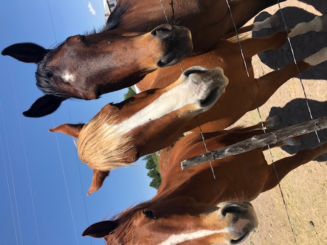
I spent much of early Covid in Texas with my dog. She loves big animals as you know. Fortunately about a twenty minute walk from my house were two, then three and finally four horses and finally those four were gone as I was leaving town and two new guys were there and my impulse was to snub them. But here’s who I remember from much of the spring. Thunder, the bay horse was dominant, Disco the red horse was somehow shunned but I thought most beautiful. Cowboy was a blatant blonde with bleached looking bangs and was sort of boundaried and didn’t like to be touched. The last one to join was Dusty (the names aren’t great) and he was the one that most cuddled and sniffed and nibbled and seemed just as fascinated with Honey as she them. She just gawked and would have stayed there all day if she could. I brought carrots and it was our thing and I started to learn a bit about their bodies, their interesting folds, and areas. I learned about their strange teeth and I looked into their mouths at their pale pink tongues and fed them carrots. It was not about me, it was about Honey and it gave our day shape and once it was hot and it got very hot this summer I’d sometimes just do a carrot drive-by to spare us the grueling forty minute walk in the heat investing instead our ten sweaty minutes in feeding and staring at each other. One thing you ought to know is that in the heat horses line themselves up head to butt and fan each other’s faces with their tails. It’s cool geometry and obviously pleasurable.
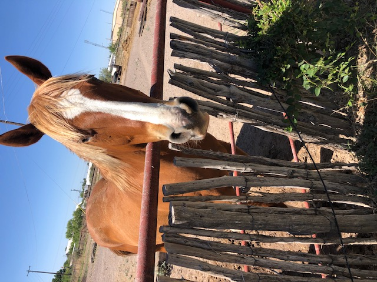
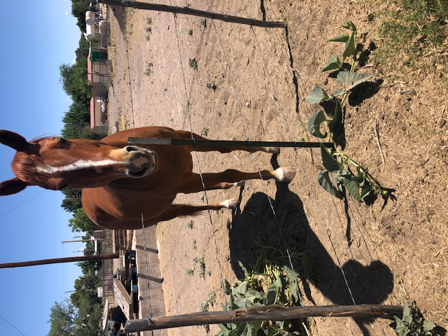
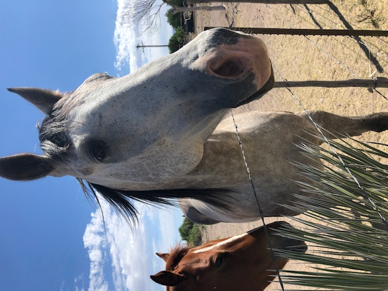
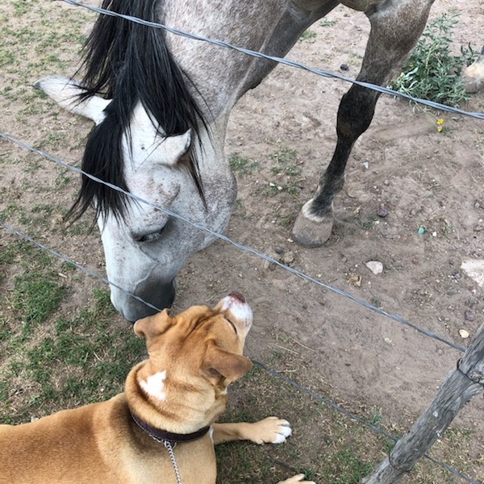
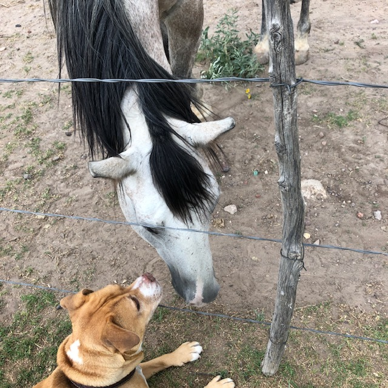
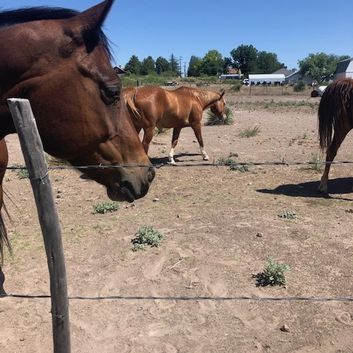
Meet Marcel
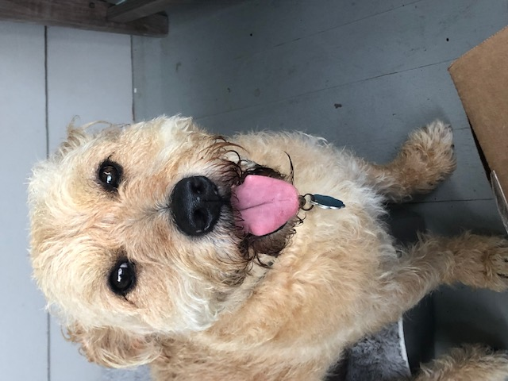
This is a great dog, Marcel, Erin’s dog. Obviously a terrier of some kind and an extremely good natured terrier. He’s part of a litter found on the side of the road and he somehow turned up in an art gallery – thus the name? I don’t know. Marcel has a quality of the truly charismatic. He makes everyone feel like he loves them more than anyone in the world. Everyone feels like Marcel gets them and generally speaking he loves to be cuddled, loves to travel and is kind of okay with a lot of different kinds of people. He has dog friends and met a big hunky guy named Obie, lately, an older guy in the art world (a dog) and it sounds like it was a real match. Marcel likes to be on a boat, he likes to be home. There’s not much Marcel doesn’t like. He likes his yard, he likes to chase rabbits. I think he liked Brooklyn too though he didn’t go out enough. He’s happy in the country. He’s kind of champagne, apricot coloured. He randomly drinks sea water, he is even known to have eaten a lot of pebbles at the beach one day and had to have his stomach pumped. He’s the kind of guy that you feel so much you want to name him. I call him Mark, or Markey. Lately I’ve been thinking about Mike, or Michael. It would work. He’s no kid, being about ten but he’s got puppy energy. He has bright black eyes and he sees the world and approves mightily.
Aoudad
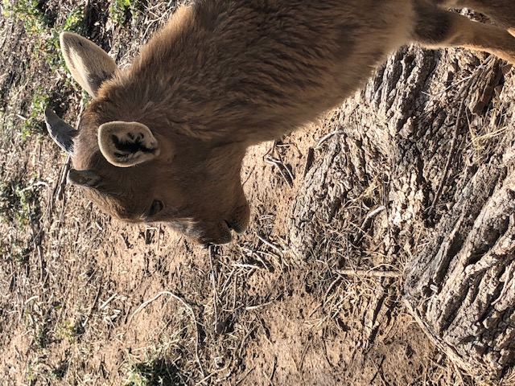
Not much to say about this guy except he is adorable, I met him and now he has been reintroduced to the wild. My friend, Mary, took care of him when he was a baby and discovered, alone, on someone’s land and they asked if she might be willing to take care of him for a little while until he was strong enough to get back out and meet his kind. Aoudads are originally from North Africa and now there are more of them in West Texas today than in Africa. They were originally here in zoos (surprise) the first ones came here in 1900 and people also had them for pets and once released they multiplied and do much better here than the native long horn sheep who are dwindling. People shoot these guys or sometimes stock them for vacationing hunters but knowing Roy it is very hard to imagine that.
Goats
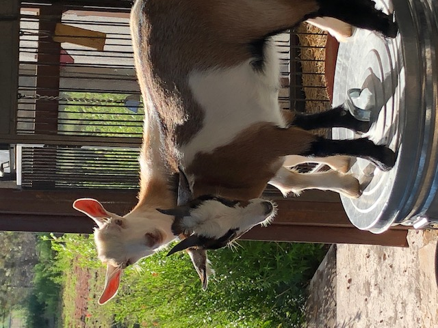
These are Mary Farley’s goats, Little Vie and Topes. They are Nigerian dwarf goats. If you have a cup of coffee with Mary these guy will perform for you, though they are simply being themselves - variously standing on a trash can, hopping up on Mary’s lap and then butting each other out of any good position the other attains. That’s what they like to do is stand on elevated spots and butt away at each other with their horns. It reminds me of the graphic novel Saga in which a sexy dad has horns. The woman he’s married to has wings. Their kid has both I believe. Horns seem like a wonderful body part to have though these goats are pretty wild and not reasonable at all. They sleep outside but prefer to be indoors so imagine having goats that think that way. Bang bang bang. Hey it’s us the goats.
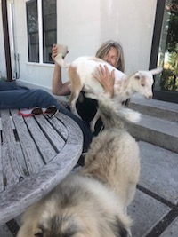
Boris
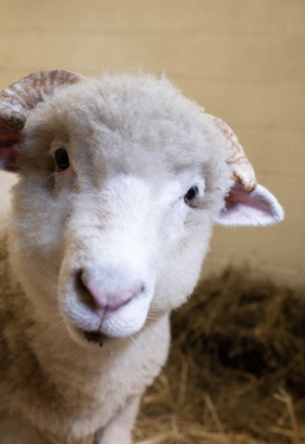
He’s a lamb. He was at a farm in upstate New York, in one of those nice farms where they have a nice life and then they are killed. This one worker developed a relationship with him and when she was leaving she asked the farmer if she could have him and the farmer said yes. Boris moved into her home that included dogs and a husband. He had a nice outside space but Boris wanted to live in the house with them which included headbutting and breaking the glass door to get in. So they moved him to Farm Sanctuary in New York (if you’ve read this far you should probably give them money) and they eventually placed him in Florida where he now lives. The family he began with felt he thought he was a dog. I think animal species are no more fixed than human genres in that we act like these are fantastic cases when instead I think my dog might think she’s a bull or any number of creatures larger and different from her. I believe in transanimal, I believe in transness. Capitalism eyes us as fixed products and so often we live and die that way.
Greta
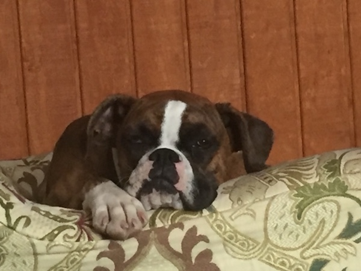
RIP. It seems so senseless to be reporting that Greta has left us before she reached a year. Part tiger, part wriggling brindle boxer, part possibly pit, she was a fine young brown dog. Greta was and is Peggy O’Brien’s dog and she was devastated one day, we all were, quite recently, when the two were walking back home from the food pantry garden and Peggy walked into the house Greta was still out there greeting each dog on on her street and someone who didn’t know her and didn’t see her ran over this sweet sweet dog. Nothing makes sense, very little makes sense in the political climate of our day except our own individual and collective actions but when someone young dies pointlessly we all momentarily feel slightly taken out. We knew her and we mourn her now. Honey loved her and I loved her too.
Ernie
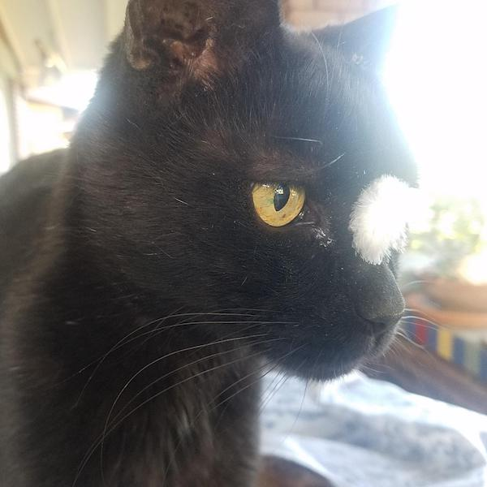
RIP. This is the last picture of him. I think he had a feather from bedding in his eye but you can see how handsome he was. I met him in 2005, he went to live with the Byrds of El Paso in 2010 when it was clear that he was very unhappy as an indoor cat in New York. I originally found him in my neighborhood in San Diego and he was all over the canyons and happy there and he had a similar rambling boy life in El Paso. I think he was 14 when he died. Later in life he had taken to lying in the street and pretty much daring people to run him over and then he would leap away. It was a cat and mouse game of some kind. He died in just such an accident and it seems that he no longer had the energy to do his part and get out of the way. I’m sad of course but I really believe he died as he lived. He loved his freedom and died in it.
Rosie
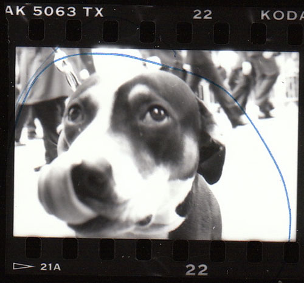
RIP. I met Rosie as a puppy on E. 3 St in 1990. She was my first dog and she died in San Diego, in a vet’s office, in 2006. I started writing about her when she began to die and I kept it up until spring of 2015 and finished the book in Marfa. I joke that I am now a dog biographer but in fact it is true. The book is as fantastic (and I mean realm, not quality) as Rosie was so I have written a dog memorial and I urge you to go there now and read about her, a wise, soulful, great great dog. And more.
The blurry photo below is actually of Rosie lying “in state” in the vet’s office after the deed was done. It seems almost papal to me in its grandeur though I know you can’t see a thing. Right after she died the vet’s assistant dashed out of the room and came back with a tiny posey which is the bright colors you see under her white chin.
2006
Dog Craft
“Protect Me You”
Copyright © 2020 Eileen Myles